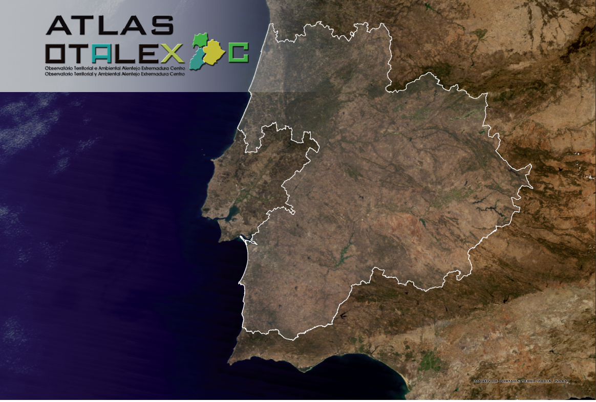

|
|
OTALEX Linked DataThe Atlas OTALEX C represents the result of a long series of cross-border projects where the fruitful cooperation prevails and territories defend their common interests. The initiative otalex.linkeddata.es aims to convert the data from the atlas to a more structured format, and publish them according to the Linked Data principles. In this page you will find more information about the models and technologies used to expose the data, an endpoint to issue queries against the public repository and a visualizer that allows the data already exposed in the public endpoint.  |
About usThis initiative has been developed by Ontology Engineering Group (OEG)
|